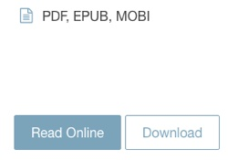
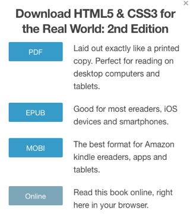

Download HTML5 and CSS3 (2nd Ed.)

This file describes the process of downloading a SitePoint Premium textbook as an ePub file. There are then follow-up files describing the importing of the epub to iBooks on Mac and Freda on PC. While the SitePoint books can be read online, downloading the file to your local device allows for bookmarking and annotating the files while studying.
Locate the Book
- Log-in to SitePoint Premium and locate the book you want to download.
- The easiest way is to click the topic the book covers, in this example we will use "HTML & CSS" in the Topics list.
- In the Types list (below Topics), click "Books".
- From the list of matching items, click the icon for HTML5 & CSS3 for the Real World: 2nd Edition.
- You will be taken to the book's description page.
Download the Source Code
At the top of the page is a button to "Download Code Sample". This is all of the code contained in the book. You should download the source code to use with the text.
Download the Book
- To the right of the splash image are two buttons: Read Online and Download.

- Above the buttons are a list of the types of files that can be downloaded.
- Click the "Download" button.
- A pop-up window will appear with the list of options.

- Click the "PDF", "EPub", or "Mobi" option button to begin the download.
- Once the download is complete, locate the file. In some cases the file may be zipped, be sure to unzip the file if needed before continuing.
- Double Click on the downloaded file to open the book. It will open in the system default reader for that book type.
What's Next?
Most Mac and iOS mobile devices have IBooks already installed. You can import an ePub formatted book into IBooks for reading, annotating and bookmarking.
Windows machines do not typically come with an Ebook reader installed. While there are many available, I recommend Freda based on strong user reviews.
If you chose the PDF option Acrobat Reader is our program of choice.
Amazon Kindle has a downloadable program to read MOBI files. It can be downloaded for both Macs and Windows machines.